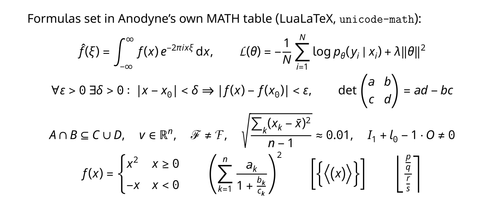
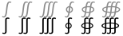
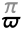
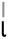

Noto Sans, by way of Lisnoti, with I l 1 and O 0 told apart, operators on one maths axis and an OpenType MATH table for formulas. Anodyne adds every weight from 100 to 900, every width down to extra-condensed, and a grade axis that makes text darker or lighter without moving a letter.
Set l = 1 and I₀ = 10 mA: 0.1 % of O-rings fail, α ≈ 0.05, χ² = 3.84, so x ∈ [0, 1] ⇒ f(x) ≤ 1 ± 0.01.
On one line this text is 0 px wide.
Darker without reflowing
Weight changes the width of every letter, so a paragraph breaks into new lines. Grade gives the strokes of a heavier or lighter weight at the widths of this one, so lines stay where they are: for light text on dark backgrounds (this page takes 25 off in dark mode), for screens and projectors that wash text out, and for emphasis that must not move anything.
Weight 400 → 550
The derivative of a sum is the sum of the derivatives, and the integral of 1/x is ln |x| + C for x ≠ 0.
Grade 0 → 150
The derivative of a sum is the sum of the derivatives, and the integral of 1/x is ln |x| + C for x ≠ 0.
Told apart
The characters that get confused in maths, science and code are drawn so they cannot be.
Il1|capital I, ell, one, bar
O0ocapital O, zero, o
αaalpha, a
χx×chi, x, times
−-–minus, hyphen, dash
+=≠on the maths axis
≤≥±comparison
{[()]}brackets
Formulas
Anodyne carries the OpenType MATH table of Noto Sans Math: fractions, radicals, big operators with limits, stretchy brackets and accents come from the font’s own data, in LuaLaTeX, in Word, and in OverLyX’s editor.

𝐀𝐁𝐂 𝐴𝐵𝐶 𝑨𝑩𝑪 𝒜ℬ𝒞 𝔄𝔅ℭ 𝔸𝔹ℂ 𝖠𝖡𝖢 𝙰𝙱𝙲 ∑∏∫∮ √∞ ∀∃∂∇
Next to the other OpenType maths fonts
The same sentence and formulas in Anodyne and in the 34 other free fonts listed under “Which OpenType math fonts are available?”, each with its text companion, set by LuaLaTeX with unicode-math at 13 pt and drawn as outlines. The facts come from the font files: stretchy glyphs from the MATH table, script forms from the ssty feature, maths alphabets out of the Unicode block. Under each font, every stylistic set and character variant that changes characters, with the usual glyphs in grey above and the alternates below.
Text in Anodyne. Lisnoti with every weight from 100 to 900, a width and a grade axis, and formulas at Computer Modern’s proportions (TeX’s constants, delimiters that grow as Computer Modern’s do); the MATH table is in all four static files.
9 100 glyphs
981 size variants and 81 assemblies for 167 vertical and 29 horizontal stretchy glyphs
script forms (ssty) for 462 glyphs
maths alphabets 996 of 996
bold maths: Anodyne-Bold.ttf
dotless i and j under accents (dtls)
mirrored forms for right-to-left maths (rtlm)
ss06 changes only glyphs without a character of their own
Text in Fira Sans. The answer sets FiraGO as text; Fira Sans, which FiraGO extends, stands in for it here. Not in the font, so set in grey from Latin Modern Math: ℱ 𝒜 𝔤.
2 094 glyphs
438 size variants and 24 assemblies for 40 vertical and 6 horizontal stretchy glyphs
script forms (ssty) for 7 glyphs
maths alphabets 440 of 996
no bold maths font
dotless i and j under accents (dtls)

ss01 Upright Integralsss02 Planck Constant with Barss03 Complement Alternates
268 size variants and 70 assemblies for 102 vertical and 52 horizontal stretchy glyphs
cut-ins for 170 glyphs
script forms (ssty) for 262 glyphs
maths alphabets 910 of 996
bold maths: ArsenalMath-SansBold.otf
dotless i and j under accents (dtls)
cv00 fraktur capitalscv01 planck constant over two picv02 empty setcv03 ε in 4 alphabetscv05 π in 4 alphabetscv06 φ in 4 alphabetscv07 ρ in 4 alphabetscv08 σ in 4 alphabetscv09 θ in 4 alphabetscv10 Θ in 4 alphabetsss01 mathcalss03 narrowiintsss04 leqslant
340 size variants and 65 assemblies for 61 vertical and 49 horizontal stretchy glyphs
cut-ins for 903 glyphs
script forms (ssty) for 617 glyphs
maths alphabets 864 of 996
bold maths: Luciole-Math-Bold.otf
dotless i and j under accents (dtls)
cv01 planck constant over two picv02 empty setcv03 ε in 4 alphabetscv04 κ in 4 alphabets

cv05 π in 4 alphabetscv06 φ in 4 alphabetscv07 ρ in 4 alphabetscv08 σ in 4 alphabetscv09 θ in 4 alphabetscv10 Θ in 4 alphabetscv11 figures and bold figures

cv12 l in 4 alphabetscv13 l in 4 alphabetscv14 a in 4 alphabetsss01 mathscrss04 leqslantss05 smaller
244 size variants and 73 assemblies for 72 vertical and 52 horizontal stretchy glyphs
cut-ins for 785 glyphs
script forms (ssty) for 478 glyphs
maths alphabets 945 of 996
bold maths: Concrete-Math-Bold.otf
dotless i and j under accents (dtls)
cv01 planck constant over two picv02 empty setcv03 ε in 6 alphabetscv04 κ in 6 alphabetscv05 π in 6 alphabetscv06 φ in 6 alphabetscv07 ρ in 6 alphabetscv08 σ in 6 alphabetscv09 θ in 6 alphabetscv10 Θ in 6 alphabetsss03 upintss04 leqslantss05 smallerss06 subsetneq
246 size variants and 69 assemblies for 58 vertical and 52 horizontal stretchy glyphs
cut-ins for 172 glyphs
script forms (ssty) for 728 glyphs
maths alphabets 931 of 996
no bold maths font
dotless i and j under accents (dtls)
cv01 planck constant over two picv02 empty setcv03 ε in 6 alphabetscv04 κ in 4 alphabetscv05 π in 4 alphabetscv06 φ in 6 alphabetscv09 θ in 4 alphabetscv10 Θ in 4 alphabetscv11 Φ in 4 alphabetssalt figures and bold fraktur small letters …ss05 smallerss06 subsetneq
Text in CMU Concrete. Upright letters only, so set with math-style=upright as in the answer; abandoned in 2010 and incomplete. Not in the font, so set in grey from Latin Modern Math: ℂ.
1 904 glyphs
145 size variants and 25 assemblies for 42 vertical and 9 horizontal stretchy glyphs
468 size variants and 69 assemblies for 118 vertical and 47 horizontal stretchy glyphs
cut-ins for 233 glyphs
script forms (ssty) for 529 glyphs
maths alphabets 996 of 996
no bold maths font
dotless i and j under accents (dtls)
flatter accents over capitals (flac)
cv01 small lambda with strokecv02 small rams horncv03 empty setcv04 set minusss01 script lettersss02 italic small lettersss03 small lettersss04 primesss05 arrowsss06 negated relationsss07 big operatorsss08 integralsss09 negated relationsss10 relationsss11 subsetsss12 proportional to and frown …ss13 sine wavess14 big operatorsss15 intersection and union …ss16 circled operatorsss20 inverted lazy s and relations …
344 size variants and 79 assemblies for 80 vertical and 52 horizontal stretchy glyphs
cut-ins for 964 glyphs
script forms (ssty) for 485 glyphs
maths alphabets 951 of 996
bold maths: Erewhon-Math-Bold.otf
dotless i and j under accents (dtls)
cv00 figures and bold figurescv01 planck constant over two picv02 empty setcv03 ε in 4 alphabetscv04 κ in 4 alphabetscv05 π in 4 alphabetscv06 φ in 4 alphabetscv07 ρ in 4 alphabetscv08 σ in 4 alphabetscv09 θ in 4 alphabetscv10 Θ in 4 alphabetscv11 partial derivativescv13 l in 4 alphabetscv20 E in 2 alphabetscv21 Q in 2 alphabetscv22 T in 2 alphabetsss01 mathcalss03 upintss04 leqslantss05 smallerss06 subsetneqss07 parallelslantss09 largedelim
cv00 fraktur capitalscv01 planck constant over two picv02 empty setcv03 ε in 6 alphabetscv04 κ in 6 alphabetscv05 π in 6 alphabetscv06 φ in 6 alphabetscv07 ρ in 6 alphabetscv08 σ in 6 alphabetscv09 θ in 6 alphabetscv10 Θ in 6 alphabetsss01 mathcalss02 bbsansss03 narrowiintsss04 leqslantss05 smallerss06 subsetneqss07 parallelslant
276 size variants and 73 assemblies for 72 vertical and 52 horizontal stretchy glyphs
cut-ins for 968 glyphs
script forms (ssty) for 482 glyphs
maths alphabets 951 of 996
bold maths: XCharter-Math-Bold.otf
dotless i and j under accents (dtls)
cv00 figures and bold figurescv01 planck constant over two picv02 empty setcv03 ε in 4 alphabetscv04 κ in 4 alphabetscv05 π in 4 alphabetscv06 φ in 4 alphabetscv07 ρ in 4 alphabetscv08 σ in 4 alphabetscv09 θ in 4 alphabetscv10 Θ in 4 alphabetscv11 v in 2 alphabetscv12 w in 2 alphabetscv13 l in 4 alphabetscv20 E in 2 alphabetscv21 Q in 2 alphabetscv22 T in 2 alphabetsss01 mathcalss03 upintss04 leqslantss05 smallerss06 subsetneqss07 parallelslant
MTPro2 Math: Commercial (PCTeX); the free Lite set is under a proprietary EULA that forbids modifying or passing it on, and the OpenType font is converted from it.
NagwaTK Math: Creative Commons BY-NC-ND (non-commercial, no derivatives); the download page also sits behind a browser check.
Install the four files in fonts/static: Regular, Bold, Italic and Bold Italic, each with the MATH table, so Word and LaTeX can set equations in Anodyne. Apps that handle variable fonts can use fonts/variable for every weight and grade.